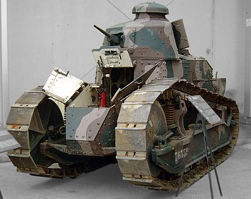

RENAULT FT
Informacije o vozilu:
| Specifikacija | Detalji |
|---|---|
| Naziv | Renault FT |
| Tip | Laki tenk (7 tona) |
| Uveden u uporabu | 1918. godine |
| Naoružanje | 37 mm top ili 8 mm strojnica |
| Oklop | 6–22 mm |
| Brzina | 8 km/h |
| Posada | 2 (vozač i zapovjednik/topnik) |
Francuska vojska je svoje FT tijekom I. svjetskog rata razmjestila u devet regimenti, označenih od 501 do 509. Svaka je dobila tri bojne, koje su se sastojale od tri satnije. Puni sastav bojne trebao je brojiti čak 75 tenkova svih inačica. Grupiranjem tako velikog broja FT trebao je do maksimuma iskoristiti njihovu pokretljivost uz osiguranje dostatne paljbene moći. Prva iskustva su pokazala da se FT ipak ne mogu rabiti za samostalna ofenzivna djelovanja, i to ne zbog slabe pokretljivosti, nedostatka paljbene moći ili nedovoljne oklopne zaštite, već prije svega zbog kronične nepouzdanosti.

Američki FT 1918.